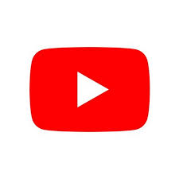
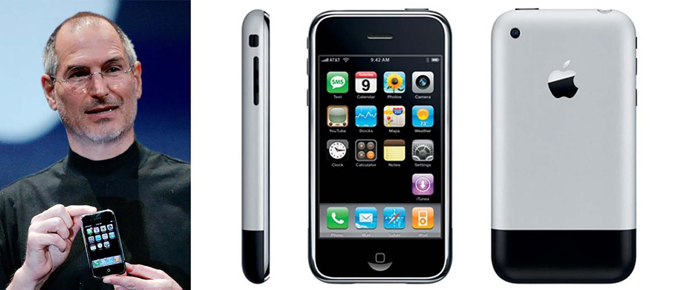
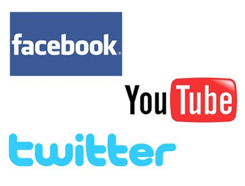
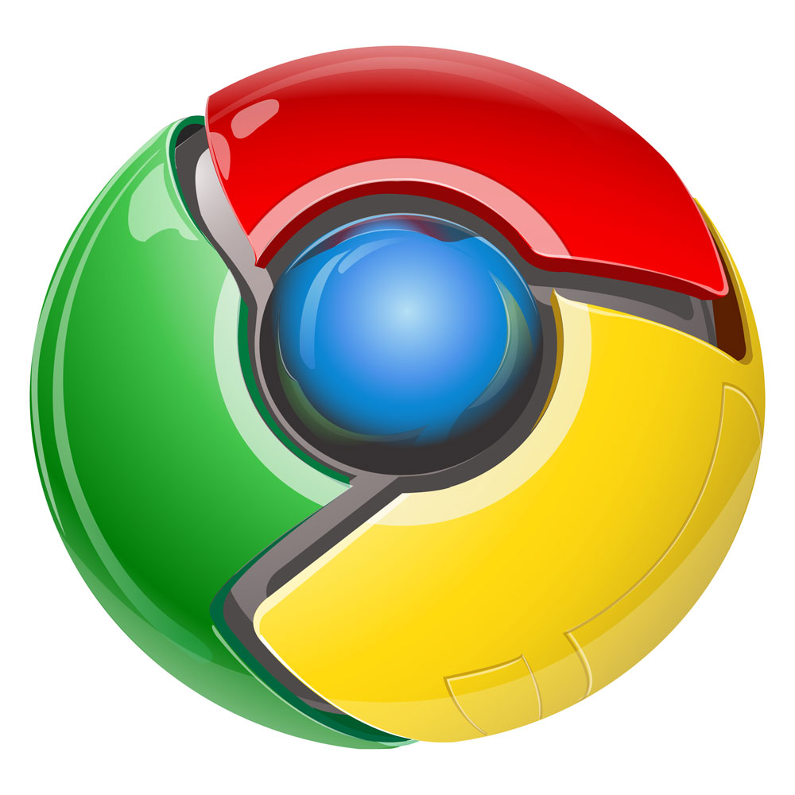

2004

Mark Zuckerberg lanza Facebook. Surge la Web 2.0 la cual se caracteriza por una interacción colaborativa, donde el usuario puede crear información. La Web 2.0 permitió a los usuarios interactuar y colaborar entre sí. Se generó una comunidad virtual. Había servicios web y aplicaciones web.
2005
Se crea YouTube. La plataforma más grande de acceso a vídeos en Internet la cual actualmente está remplazando a la televisión.
2006

Se buscó que los usuarios se pudieran conectar desde cualquier sitio y desde cualquier dispositivo. Se incorporó la interoperabilidad entre los sistemas informáticos. Se empezaron a desarrollar plataformas para las nuevas tecnologías (Smartphones). Nace Twitter: una nueva manera de comunicarse, conocida como microblogging.
2007
Apple lanza el iPhone, marcando el inicio de la era de los dispositivos móviles conectados a Internet.
2008
Las primeras "elecciones en la red" tuvieron lugar en Estados Unidos para elegir a su presidente. Fue la primera vez que unos candidatos políticos hicieron uso de todas las posibilidades que la red les ofrecía: YouTube, redes sociales y Twitter.
2009
Google publicó su propio navegador, Google Chrome, que añadió más competencia al mercado. Chrome introdujo un nuevo modelo de desarrollo frenético, con versiones cada dos meses (o menos).